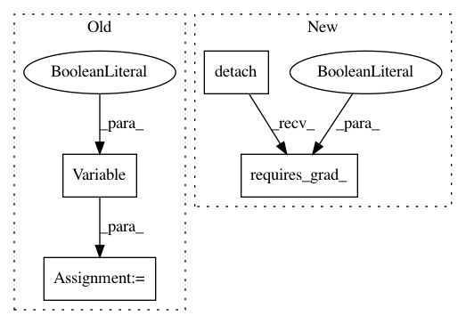

8f6a6f153781d0908fb0904349aae844494026ea,models/shiftnet_model.py,ShiftNetModel,backward_D,#ShiftNetModel#,172
Before Change
else:
alpha = torch.rand(real_AB.size())
x_hat = Variable(alpha * real_AB.data + (1 - alpha) * fake_AB.detach().data, requires_grad=True)
pred_hat = self.netD(x_hat)
if self.use_gpu:
gradients = torch.autograd.grad(outputs=pred_hat, inputs=x_hat, grad_outputs=torch.ones(pred_hat.size()).cuda(),
create_graph=True, retain_graph=True, only_inputs=True)[0]
else:
gradients = torch.autograd.grad(outputs=pred_hat, inputs=x_hat, grad_outputs=torch.ones(pred_hat.size()),
create_graph=True, retain_graph=True, only_inputs=True)[0]
After Change
// calculate gradient penalty
alpha = torch.rand(real_AB.size()).to(self.device)
x_hat = alpha * real_AB.detach() + (1 - alpha) * fake_AB.detach()
x_hat.requires_grad_(True)
pred_hat = self.netD(x_hat)
gradients = torch.autograd.grad(outputs=pred_hat, inputs=x_hat, grad_outputs=torch.ones(pred_hat.size()).to(self.device),
create_graph=True, retain_graph=True, only_inputs=True)[0]
In pattern: SUPERPATTERN
Frequency: 3
Non-data size: 4
Instances
Project Name: Zhaoyi-Yan/Shift-Net_pytorch
Commit Name: 8f6a6f153781d0908fb0904349aae844494026ea
Time: 2018-12-03
Author: yanzhaoyi@outlook.com
File Name: models/shiftnet_model.py
Class Name: ShiftNetModel
Method Name: backward_D
Project Name: jalola/improved-wgan-pytorch
Commit Name: fc8951bbd36b14099e41fe171ab57e9f3937fe4f
Time: 2018-05-08
Author: waterstorm64@gmail.com
File Name: gan_train.py
Class Name:
Method Name: calc_gradient_penalty
Project Name: jalola/improved-wgan-pytorch
Commit Name: fc8951bbd36b14099e41fe171ab57e9f3937fe4f
Time: 2018-05-08
Author: waterstorm64@gmail.com
File Name: congan_train.py
Class Name:
Method Name: calc_gradient_penalty